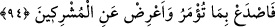
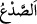
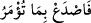

ezberliyor ve bundan ekmek yiyor. Kimileri meşhûr olmak ve üstünlüğünü ortaya
koyabilmenin bir yolu görerek Kur’an’ın tefsîr ve te’vîlini tahsîl edip bundan ekmek
yiyor. Kimileri Kur’an’ın mânâlarını ortaya çıkarıp fıkhî hükümlerini istinbât ederek
bundan ekmek yiyor. Kimileri Kur’an’ın kıssa, haber, öğüt ve hikmetleriyle meşgul olup
bundan ekmek yiyor. Kimileri de Kur’an’ı kendi mezheblerine uygun olarak te’vil edip
kendi görüşlerine göre tefsîr ediyor ve bu yüzden küfre düşüyor.
Allah daha sonra şöyle buyuruyor: “Rabbin hakkı için, mutlaka onların hepsini
sorguya çekeceğiz.” Acaba bu amelleri Allah ile, Allah uğrunda ve Allah için mi
yaptılar yoksa dünyevi menfaatler için nefislerinin peşinde ve tabîatları ile mi yaptılar?
Bu âyetin benzeri: “Allah bu sözü, doğruları doğruluklarıyla sorumlu kılmak için
aldı.” (el-Ahzâb, 33/8) âyetidir. et-Te’vîlât’tan yapılan nakil burada bitiyor.
Bu âyetteki “sıdkıhim (doğruluklarıyla)” ifâdesi, kendilerine göre değil, Allah’a
göre doğrulukları anlamındadır. Cüneyd (k.s.) bu şekilde tefsîr etmiştir. Bu, çok lâtîf ve
derin bir mânâdır. Çünkü insanlara göre doğru ve müslüman olmak kolaydır. Ama
Hakk’a göre doğru ve müslüman olmak zordur. Bu bakımdan Allah Teâlâ’dan
müslümanlığımızı da doğruluğumuzu da izâfî ve merdûd değil, hakîkî ve makbûl
kılmasını niyâz ederiz!
Fakih Ebu’l-Kasım’ın şöyle dediği nakledilir: Âlimler şu üç haslet tam ve doğru bir
şekilde bulunduğu zaman kurtuluşa erileceği ve bunların da ancak birlikte olduklarında
tamama ermiş olacağı husûsunda ittifâk etmiştir: Zulümden arınmış bir Müslümanlık,
helâl gıdâ ve amellerde Allah için samîmî olmak (sıdk).
Diryâku’z-zünûb adlı eserde denilir ki: Ömer b. Abdülaziz o kadar âdil olmasına
rağmen endişe eder, adâletten uzaklaşmayacağından emin olmazdı. Onu ölümünden on
iki sene sonra rüyâda gördüler. “İşte şimdi hesâbımı vermekten kurtuldum!” dedi. Bu
durumdan ibret al, behey ona buna eziyet edip duran!
94. Sana emrolunanı açıkça söyle ve ortak koşanlardan yüz çevir!
“Sana emrolunanı açıkça söyle” yâni sana emredilmekte olan şer‘î hükümleri, sana
gönderilen emir ve nehiyleri açıkça söyle, duyur, ızhâr ve âşikâr et. Ya da hak ile bâtılı
birbirinden ayır, hakkı ortaya koy ve başka şeylerden farkını beyân et. el-Kamus’ta
belirtildiği üzere “
”, sert bir şeyi yarmak demektir. O zaman “
” âyeti,
‘Tevhîd ile onların birliklerini yar!’ anlamındadır.
Ebü’l-Leys Tefsîri’nde şöyle denilir: Bu âyetin nüzûlünden önce Rasûlullah (s.a.)
Allah’ın kendisine indirdiği hiçbir şeyi açıkça söylemez, gizli tutardı. Bu, “Sana
emrolunanı açıkça söyle” âyeti inene kadar devâm etti.
Fakîr (Bursevî) der ki: Hz. Peygamber (s.a.) ma‘rifet ve hakîkat türü şeyleri değil,